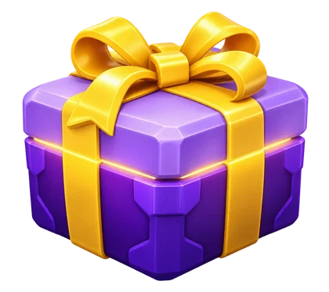
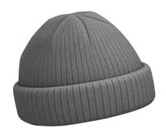

Roblox – la oss se litt nærmere
En aktivitet for en voksen og et barn mellom 7 og 10 år. Dere ser på noen situasjoner fra spill sammen og snakker om spillingen framover.
Ingen innlogging. Ingenting dere velger, blir lagret eller sendt noe sted.
Foreldre, før dere starter!
Les dette alene før dere setter dere sammen. Felter med ＋ er valgfri fordypning.
Hva er bekymringene?
Medietilsynet la 22. oktober 2026 fram rapporten «Roblox under radaren». De så nærmere på fire populære spill på Roblox: Adopt Me, Brookhaven RP, 99 Nights in the Forest og Clip It. De intervjuet også tolv familier og brukte tall fra undersøkelsen Barn og medier 2026.
Roblox er ikke ett spill, men en plattform med svært mange spill laget av ulike utviklere. Funnene gjelder de fire spillene som ble undersøkt. Andre spill kan ha andre funksjoner.
🛒 Kjøpepress
Rapportens funnBarn møter mye kjøpepress. Man kjøper med Robux, plattformens egen valuta, som koster ekte penger. Rapporten beskriver betalte fordeler og tilbud som bare varer en kort stund.
Barna i undersøkelsen sier at Roblox er morsomt og sosialt, men forteller også om fristelser og om at det kjennes urettferdig når andre kan kjøpe seg fordeler.
🎁 Betalte tilfeldige belønninger
Rapportens funnRapporten omtaler lootbokser: man betaler for en pakke uten å vite hva den inneholder. Det kan gi lyst til å prøve én gang til, og én gang til.
👥 Kontakt med ukjente
Rapportens funnSpillere kan møte folk de ikke kjenner. Medietilsynet beskriver Clip It som et spill med funksjoner som likner sosiale medier.
Vår forklaringDe fleste man møter, er vanlige spillere. Problemet er at man ikke kan vite hvem som står bak en figur.
🗺️ Vanskelig å ha oversikt
Rapportens funnForeldrekontroll finnes, men dekker ifølge rapporten ikke alle utfordringene. Medietilsynet ber plattformene om å gjøre endringer.
Vår forklaringMed så mange spill, som stadig endres, er det urimelig å forvente at en forelder skal sjekke hvert spill og hver funksjon. Du kan vurdere tjenesten som helhet.
Fordypning: Hva sier Roblox om sikkerhet og kontakt?
Dette er Roblox' egne opplysninger. Vi har ikke kunnet kontrollere hvordan de virker i praksis.
- Siden januar 2026 sier Roblox at man må gjøre en alderssjekk (anslag av alder ut fra ansiktet, eller legitimasjon fra 13 år) for å bruke chat. Spillere plasseres i aldersgrupper og skal bare kunne chatte med egen og liknende aldersgrupper.
- For barn under 9 år er chat inne i spillene ifølge Roblox skrudd av som standard, med mindre en forelder gir samtykke etter en alderssjekk.
- Foreldrekontrollen ligger under Innstillinger → Foreldrekontroll, og omfatter blant annet grense for pengebruk og oversikt over venner.
Ifølge Medietilsynet dekker foreldrekontrollen likevel ikke alle utfordringene. Barna de snakket med, fortalte også at de kjenner til måter å komme rundt den på. Hvilke kontaktmuligheter som finnes, varierer dessuten fra spill til spill.
Fordypning: Om seksuell utnyttelse og grooming
Dette temaet er ikke en del av fellesaktiviteten. Det er her for at du skal ha et helhetlig bilde.
Medietilsynets rapport handler, så langt vi har kunnet kontrollere, om kjøpepress, design som gjør det vanskelig å slutte, og kontakt med ukjente. Vi har ikke funnet at rapporten dokumenterer konkrete tilfeller av grooming.
I USA har flere delstater saksøkt Roblox, blant andre Louisiana (august 2025), Iowa (desember 2025) og Nebraska (mars 2026). De hevder at plattformen ikke har beskyttet barn godt nok mot seksuell utnyttelse. Dette er påstander i rettssaker, ikke avgjørelser. Vi kjenner ikke utfallet.
Det betyr ikke at barn flest blir utsatt for dette. Det betyr at risikoen er alvorlig nok til at voksne bør vurdere hvilke kontaktmuligheter barnet har.
Er du bekymret for at noe har skjedd, kan du kontakte politiet på 02800, eller 112 ved akutt fare.
Kilder og faktakontroll
Faktakontroll: 22. oktober 2026. Rapporten kom samme dag. Vi har kontrollert opplysningene mot Medietilsynets pressemelding og nyhetsomtale gjennom nettsøk, men har ikke lest hele rapporten. Les gjerne kildene selv.
- NRK: «Rapport: Roblox utsetter barn for massivt kjøpepress» (Knut Are Tornås og Roy Pettersen)
- Medietilsynet: «Ny rapport fra Medietilsynet: Betydelig risiko på spillplattformen Roblox»
- Roblox: om alderssjekk og chat (engelsk)
- Roblox: foreldrekontroll (engelsk)
- Iowas riksadvokat: søksmål mot Roblox (engelsk)
- Nebraskas riksadvokat: søksmål mot Roblox (engelsk, PDF)
- KTTC: om Louisianas søksmål (engelsk)
Situasjonene i fellesdelen er oppdiktede eksempler laget for samtale. De viser ikke bestemte spill.
Hva betyr Roblox for barnet?
For barnet ditt er Roblox kanskje ikke «bare et spill». Det kan være:
- Venner – et sted å leke med de andre etter skolen, og noe å snakke om i friminuttet.
- Prosjekter – noe de har bygget eller samlet over lang tid.
- Mestring – ting de har øvd på og blitt gode til.
- Noe kjent – en fast del av hverdagen.
Å miste dette kan kjennes som et ekte tap, selv om du har gode grunner. Det er naturlig om barnet blir lei seg eller sint.
Forbered din egen vurdering
Tenk gjennom dette. Du trenger ikke skrive noe.
- Hva er mine viktigste grunner til å stoppe Roblox?Velg én eller to. Det holder.
- Hvordan forklarer jeg dem med ord barnet forstår?For eksempel: «Spillet er laget for å få deg til å kjøpe ting», eller «Vi kan ikke vite hvem du møter der».
- Hva er bestemt, og hva kan barnet påvirke?Beslutningen er din. Barnet kan kanskje være med på å bestemme når, hvordan det sier fra til venner, og hva dere gjør i stedet.
- Hvordan skal overgangen gjennomføres?Slutt med en gang, eller en siste økt for å si ha det? Hva skjer med kontoen?
Du sier beslutningen med egne ord. Aktiviteten gir dere et felles utgangspunkt, men den bestemmer ikke for deg. Og barnet trenger ikke forstå alt for at du kan sette en grense.
«Vi sa ja ut fra det vi visste da. Nå har vi lært mer.»
Å endre en tillatelse betyr ikke at barnet har gjort noe galt.
Slik starter dere
Vær ærlig om hva dere skal gjøre, men vent med beslutningen. Du kan for eksempel si:
«Jeg har lært noen ting om Roblox som gjør meg bekymret. Jeg vil gjerne se på dem sammen med deg og høre hva du tenker. Så skal vi snakke om hva det betyr for spillingen framover.»
Deretter begynner aktiviteten med barnets egen opplevelse. Så ser dere på tre oppdiktede situasjoner. Til slutt får barnet si hva det tenker om Roblox nå. Etterpå forteller du om beslutningen din med egne ord. Støtten til den delen ligger sammenslått nederst på siste skjerm.
Møt barnets reaksjon
- Lytt. Barnet kan være uenig, lei seg eller sint. Det trenger du ikke rette på.
- Anerkjenn tapet. «Jeg skjønner at dette er kjipt. Du liker jo å spille med de andre.»
- Stå i beslutningen. «Jeg forstår at du er uenig. Jeg har likevel bestemt meg, fordi det er min jobb å passe på deg.»
- Ikke krev enighet. Barnet trenger ikke si at Roblox er dårlig, eller at det er enig.
- Ikke gjem deg bak aktiviteten. Det er du, ikke nettsiden, som har bestemt.
Mange barn trenger tid. Det er vanlig at følelsene kommer tilbake de neste dagene.
Dere kan ta pause når som helst. Si gjerne: «La oss ta en pause og snakke mer i morgen.»
Først vil vi høre fra deg som spiller: Hva liker du med Roblox?
Velg ett eller flere kort. Den voksne leser høyt.
Snakk sammen
- Fortell om noe du liker å gjøre.
Neste: Vi ser på tre oppdiktede situasjoner fra spill, og snakker om spillingen framover.
Situasjon 1: «Bare ett forsøk til!»


Hvilken hatt får du? Det vet du ikke før du åpner.
100 Robux per pakke
Oppdiktet pris: I dette eksempelet koster 100 Robux 10 kroner.
Så langt
Dine hatter
Her stopper vi. Ti pakker, 100 kroner – og bare grå luer.
Dette kan være i pakken
Snakk sammen
- Hvorfor kan man få lyst til å prøve igjen?
- Hva tjener den som selger pakkene?
Les etter samtalen: Hva skjer her?
Når man ser de kule hattene, er det lett å håpe at neste pakke er den heldige. Men hvert forsøk koster like mye, og flere forsøk gir ingen garanti for å få det man ønsker seg. Man vet heller ikke hvor stor sjansen er.
I dette eksempelet kom det bare grå luer – med vilje. Den som selger pakkene, tjener penger på hvert eneste forsøk, uansett hva som er inni.
Situasjon 2: «Vennen din trenger hjelp!»

Vennen din har mistet alle livene sine.
Redd vennen din! Betal 49 Robux.
Du har 10 sekunder!
Snakk sammen
- Hvordan føles dette valget?
- Hvordan kunne spillet latt deg hjelpe vennen din uten å betale?
Les etter samtalen: Hva skjer her?
⏱️ Den korte tiden
Klokka teller ned. Da velger man fort, før man rekker å tenke seg om eller spørre en voksen.
💰 Prisen i Robux
Hvor mye er 49 Robux i kroner? Det står ikke. Når prisen er i en spillvaluta, er det vanskeligere å vite hva noe egentlig koster.
🤝 Å hjelpe en venn
Valget handler om å redde en venn. Da kan det kjennes som om man er en dårlig venn hvis man ikke betaler. Men det er spillet som har laget valget slik – ikke vennen din.
🛒 Kjøpsvinduet
Du trengte bare 49 Robux, men det største tilbudet ser ut som det beste kjøpet. Da er det lett å kjøpe mer enn man trenger. Det som blir til overs, blir liggende i spillet og kan friste til nye kjøp.
Alt dette sammen kan gjøre det lettere å betale. Det er spillet som er laget slik. Det sier ingenting om vennen.
Situasjon 3: «Hvem er med i spillet?»
Her er tre oppdiktede spillere. Trykk på en profil for å se nærmere.
- Hvor gammel personen er
- Hva personen egentlig heter
- Om det som står på profilen, stemmer
- Hvorfor personen er i spillet
Snakk sammen
- Hva kan vi vite ut fra en spillfigur og et navn?
- Hva kan voksne hjelpe med når vi ikke vet hvem vi møter?
Les etter samtalen: Hva betyr dette?
En spillfigur og et navn kan hvem som helst lage. Profilen forteller oss ikke sikkert hvem som er bak, hvor gammel personen er, eller hva personen vil. De fleste er vanlige spillere. Men fordi vi ikke kan vite det, er det de voksnes ansvar å bestemme hvilke måter å snakke med andre på som passer for barn.
Hva tenker du nå?
Med det vi har snakket om nå – hva tenker du om Roblox?
I starten sa du at du liker
Snakk sammen
- Var det noe som overrasket deg?
- Er det noe du er uenig i?
- Har du opplevd noe som likner, når du har spilt?
Til den voksne: veien videre
Når barnet har fått si sitt, kan du fortelle om vurderingen og beslutningen din med egne ord. Se gjerne bort fra skjermen nå.
- Én eller to grunner holder. Si hva som er bestemt, og hva barnet kan være med på å bestemme.
- «Vi sa ja ut fra det vi visste da. Nå har vi lært mer.»
- Lytt. Barnet trenger ikke være enig, og trenger ikke love noe.
- En annen app er ikke automatisk tryggere. Se på den sammen før dere tar den i bruk.
Spørsmål dere kan snakke om
Dere trenger ikke bli ferdige i dag. Det er helt greit å ta en pause og snakke mer en annen dag.
Ta den tiden dere trenger. Dere kan stoppe og snakke når som helst.